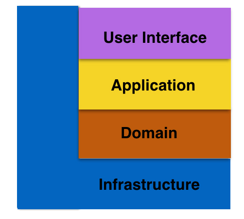

- 00 _导读 _ 什么是“The Fenix Project”？.md
- 00 开篇词 _ 如何构建一个可靠的分布式系统？.md
- 01 _ 原始分布式时代：Unix设计哲学下的服务探索.md
- 02 _ 单体系统时代：应用最广泛的架构风格.md
- 03 _ SOA时代：成功理论与失败实践.md
- 04 _ 微服务时代：SOA的革命者.md
- 05 _ 后微服务时代：跨越软件与硬件之间的界限.md
- 06 _ 无服务时代：“不分布式”云端系统的起点.md
- 07 _ 远程服务调用（上）：从本地方法到远程方法的桥梁.md
- 08 _ 远程服务调用（下）：如何选择适合自己的RPC框架？.md
- 09 _ RESTful服务（上）：从面向过程编程到面向资源编程.md
- 10 _ RESTful服务（下）：如何评价服务是否RESTful？.md
- 11 _ 本地事务如何实现原子性和持久性？.md
- 12 _ 本地事务如何实现隔离性？.md
- 13 _ 全局事务和共享事务是如何实现的？.md
- 14 _ 分布式事务之可靠消息队列.md
- 15 _ 分布式事务之TCC与SAGA.md
- 16 _ 域名解析系统，优化HTTP性能的第一步.md
- 17 _ 客户端缓存是如何帮助服务器分担流量的？.md
- 18 _ 传输链路，优化HTTP传输速度的小技巧.md
- 19 _ 如何利用内容分发网络来提高网络性能？.md
- 20 _ 常见的四层负载均衡的工作模式是怎样的？.md
- 21 _ 服务端缓存的三种属性.md
- 22 _ 分布式缓存如何与本地缓存配合，提高系统性能？.md
- 23 _ 认证：系统如何正确分辨操作用户的真实身份？.md
- 24 _ 授权（上）：系统如何确保授权的过程可靠？.md
- 25 _ 授权（下）：系统如何确保授权的结果可控？.md
- 26 _ 凭证：系统如何保证与用户之间的承诺是准确完整且不可抵赖的？.md
- 27 _ 保密：系统如何保证敏感数据无法被内外部人员窃取滥用？.md
- 28 _ 传输（上）：传输安全的基础，摘要、加密与签名.md
- 29 _ 传输（下）：数字证书与传输安全层.md
- 30 _ 验证：系统如何确保提交给服务的数据是安全的？.md
- 31 _ 分布式共识（上）：想用好分布式框架，先学会Paxos算法吧.md
- 32 _ 分布式共识（下）：Multi Paxos、Raft与Gossip，分布式领域的基石.md
- 33 _ 服务发现如何做到持续维护服务地址在动态运维中的时效性？.md
- 34 _ 路由凭什么作为微服务网关的基础职能？.md
- 35 _ 如何在客户端实现服务的负载均衡？.md
- 36 _ 面对程序故障，我们该做些什么？.md
- 37 _ 要实现某种容错策略，我们该怎么做？.md
- 38 _ 限流的目标与模式.md
- 39 _ 如何构建零信任网络安全？.md
- 40 _ 如何实现零信任网络下安全的服务访问？.md
- 41 _ 分布式架构中的可观测到底说的是什么？.md
- 42 _ 分析日志真的没那么简单.md
- 43 _ 一个完整的分布式追踪系统是什么样子的？.md
- 44 _ 聚合度量能给我们解决什么问题？.md
- 45 _ 模块导学：从微服务到云原生.md
- 46 _ 容器的崛起（上）：文件、访问、资源的隔离.md
- 47 _ 容器的崛起（下）：系统、应用、集群的封装.md
- 48 _ 以容器构建系统（上）：隔离与协作.md
- 49 _ 以容器构建系统（下）：韧性与弹性.md
- 50 _ 应用为中心的封装（上）：Kustomize与Helm.md
- 51 _ 应用为中心的封装（下）：Operator与OAM.md
- 52 _ Linux网络虚拟化（上）：信息是如何通过网络传输被另一个程序接收到的？.md
- 53 _ Linux网络虚拟化（下）：Docker所提供的容器通讯方案有哪些？.md
- 54 _ 容器网络与生态：与CNM竞争过后的CNI下的网络插件生态.md
- 55 _ 谈谈Kubernetes的存储设计理念.md
- 56 _ Kubernetes存储扩展架构：一个真实的存储系统如何接入或移除新存储设备？.md
- 57 _ Kubernetes存储生态系统：几种有代表性的CSI存储插件的实现.md
- 58 _ Kubernetes的资源模型与调度器设计.md
- 59 _ 透明通讯的涅槃（上）：通讯的成本.md
- 60 _ 透明通讯的涅槃（下）：控制平面与数据平面.md
- 61 _ 服务网格与生态：聊聊服务网格的两项标准规范.md
- 63 _ 基于Spring Boot的单体架构.md
- 64 _ 基于Spring Cloud的微服务架构.md
- 65 _ 基于Kubernetes的微服务架构.md
- 66 _ 基于Istio的服务网格架构.md
- 67 _ 基于云计算的无服务架构.md
- 春节特别放送（上）_ 有的放矢，事半功倍.md
- 春节特别放送（下）_ 积累沉淀，知行合一.md
- 用户故事 _ 詹应达：持续成长，不惧未来.md
- 结束语 _ 程序员之路.md
- 结课测试 _ 一套习题，测出你的掌握程度.md
63 _ 基于Spring Boot的单体架构
你好，我是周志明。
单体架构是Fenix’s Bookstore服务端的起始版本，它与后面的基于微服务（Spring Cloud、Kubernetes）、服务网格（Istio）、无服务（Serverless）架构风格实现的其他版本，在业务功能上的表现是完全一致的。
所以，如果你不是针对性地带着解决某个具体问题、了解某项具体工具或技术的目的而来，而是有比较充裕的时间，希望了解软件架构的全貌与发展的话，我就推荐你从这个工程入手，来探索现代软件架构。因为单体架构的结构相对来说比较直观和易于理解，这对后面要接触的其他架构风格，也可以起到良好的铺垫作用。
运行程序
好，同样地，我们可以根据以下几种途径来运行程序，看看它的最终效果是怎么样的。
- 通过Docker容器的方式运行：
$ docker run -d -p 8080:8080 --name bookstore icyfenix/bookstore:monolithic
然后在浏览器访问：http://localhost:8080，系统预置了一个用户（user:icyfenix，pw:123456），你也可以注册新用户来测试。
这里默认会使用HSQLDB的内存模式作为数据库，并在系统启动时自动初始化好了Schema，完全开箱即用。但这同时也意味着当程序运行结束时，所有的数据都不会被保留。而如果你希望使用HSQLDB的文件模式，或者其他非嵌入式的独立的数据库支持的话，也是很简单的。
这里我以常用的MySQL/MariaDB为例，程序中也已经内置了MySQL的表结构初始化脚本，你可以使用环境变量PROFILES来激活Spring Boot中针对MySQL所提供的配置，命令如下所示：
$ docker run -d -p 8080:8080 --name bookstore icyfenix/bookstore:monolithic -e PROFILES=mysql
此时，你需要通过Docker link、Docker Compose或者直接在主机的Host文件中，提供一个名为mysql_lan的DNS映射，使程序能顺利链接到数据库。关于数据库的更多配置，你可以参考源码中的application-mysql.yml。
- 通过Git上的源码，以Maven运行：
# 克隆获取源码
$ git clone https://github.com/fenixsoft/monolithic_arch_springboot.git
# 进入工程根目录
$ cd monolithic_arch_springboot
# 编译打包
# 采用Maven Wrapper，此方式只需要机器安装有JDK 8或以上版本即可，无需包括Maven在内的其他任何依赖
# 如在Windows下应使用mvnw.cmd package代替以下命令
$ ./mvnw package
# 运行程序，地址为localhost:8080
$ java -jar target/bookstore-1.0.0-Monolithic-SNAPSHOT.j
然后在浏览器访问：http://localhost:8080，系统预置了一个用户（user:icyfenix，pw:123456），你也可以注册新用户来测试。
通过Git上的源码，在IDE环境中运行：
- 以IntelliJ IDEA为例，Git克隆本项目后，在File->Open菜单选择本项目所在的目录，或者pom.xml文件，以Maven方式导入工程。
- IDEA会自动识别出这是一个Spring Boot工程，并定位启动入口为BookstoreApplication，等到IDEA内置的Maven自动下载完所有的依赖包后，运行该类即可启动。
- 如果你使用其他的IDE，没有对Spring Boot的直接支持，也可以自行定位到BookstoreApplication，这是一个带有main()方法的Java类，运行即可。
- 你可以通过IDEA的Maven面板中，Lifecycle里面的package来对项目进行打包、发布。
- 在IDE环境中修改配置（如数据库等）会更加简单，具体你可以参考工程里
application.yml和application-mysql.yml中的内容。
技术组件
Fenix’s Bookstore单体架构的后端会尽可能地采用标准的技术组件进行构建，而不依赖于具体的实现，包括以下几种：
- JSR 370：Java API for RESTful Web Services 2.1（JAX-RS 2.1）- 在RESTFul服务方面，采用的实现为Jersey 2，你也可以替换为Apache CXF、RESTeasy、WebSphere、WebLogic等。
- JSR 330：Dependency Injection for Java 1.0- 在依赖注入方面，采用的实现为Spring Boot 2.0中内置的Spring Framework 5。虽然在大多数场合中都尽可能地使用了JSR 330的标准注解，但因为Spring在对@Named、@Inject等注解的支持表现上，跟它本身提供的注解存在差异，所以仍然会有少量地方使用了Spring的私有注解。如果你要替换成其他的CDI实现，比如HK2，就需要进行比较大的改动了。
- JSR 338：Java Persistence 2.2- 在持久化方面，采用的实现为Spring Data JPA。你可以替换为Batoo JPA、EclipseLink、OpenJPA等实现，只需把使用CrudRepository所省略的代码手动补全回来即可，无需做其他改动。
- JSR 380：Bean Validation 2.0- 在数据验证方面，采用的实现为Hibernate Validator 6，你也可以替换为Apache BVal等其他验证框架。
- JSR 315：Java Servlet 3.0- 在Web访问方面，采用的实现为Spring Boot 2.0中默认的Tomcat 9 Embed，你也可以替换为Jetty、Undertow等其他Web服务器。
不过，也有一些组件仍然依赖了非标准化的技术实现，包括以下两种：
- JSR 375：Java EE Security API specification 1.0- 在认证/授权方面，在2017年才发布的JSR 375中，仍然没有直接包含OAuth2和JWT的直接支持。这里因为后续实现微服务架构时作对比的需要，在单体架构中，我选择了Spring Security 5作为认证服务，Spring Security OAuth 2.3作为授权服务，Spring Security JWT作为JWT令牌支持，并没有采用标准的JSR 375实现，比如Soteria。
- JSR 353/367：Java API for JSON Processing/Binding- 在JSON序列化/反序列化方面，由于Spring Security OAuth的限制（使用JSON-B作为反序列化器时的结果与Jackson等有差异），我采用了Spring Security OAuth默认的Jackson，并没有采用标准的JSR 353/367实现，比如Apache Johnzon、Eclipse Yasson等。
工程结构
Fenix’s Bookstore单体架构的后端参考（并未完全遵循）了DDD的分层模式和设计原则，整体分为以下四层。
1. Resource
对应DDD中的User Interface层，负责向用户显示信息或者解释用户发出的命令。
请注意，这里指的“用户”不一定是使用用户界面的人，而可以是位于另一个进程或计算机的服务。由于这个工程采用了MVVM前后端分离的模式，因此这里所指的用户，实际上是前端的服务消费者，所以这里我就以RESTful中的核心概念“资源”（Resource）来命名了。
2. Application
对应DDD中的Application层，负责定义软件本身对外暴露的能力，即软件本身可以完成哪些任务，并负责对内协调领域对象来解决问题。
根据DDD的原则，应用层要尽量简单，不包含任何业务规则或者知识，而只为下一层中的领域对象协调任务，分配工作，使它们互相协作，这一点在代码上表现为Application层中，一般不会存在任何的条件判断语句。
实际上在许多项目中，Application层都会被选为包裹事务（代码进入此层事务开始，退出此层事务提交或者回滚）的载体。
3.Domain
对应DDD中的Domain层，负责实现业务逻辑，即表达业务概念，处理业务状态信息以及业务规则这些行为，此层是整个项目的重点。
4. Infrastructure
对应DDD中的Infrastructure层，向其他层提供通用的技术能力，比如持久化能力、远程服务通讯、工具集，等等。

协议
课程的工程代码部分采用Apache 2.0协议进行许可。在遵循许可的前提下，你可以自由地对代码进行修改、再发布，也可以将代码用作商业用途。但要求你：
- 署名：在原有代码和衍生代码中，保留原作者署名及代码来源信息；
- 保留许可证：在原有代码和衍生代码中，保留Apache 2.0协议文件。
© 2019 - 2023 Liangliang Lee. Powered by gin and hexo-theme-book.